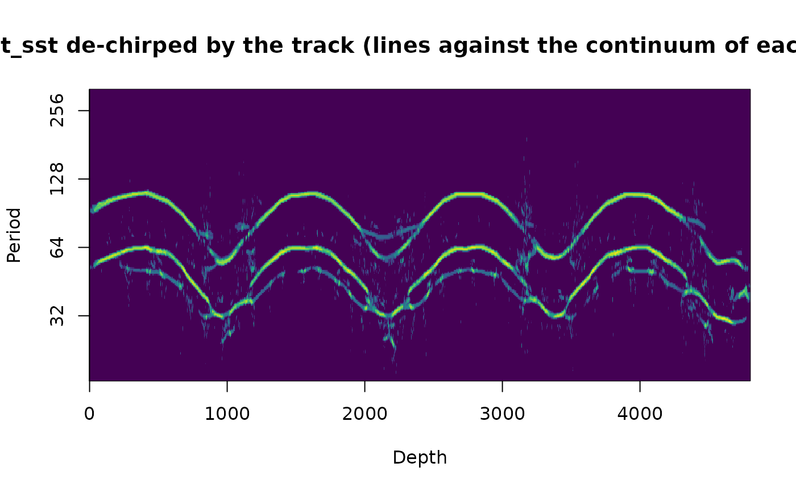

De-chirped scalogram of any transform: the record warped to time with a track, transformed, mapped back to depth
Source:R/analyse_dechirped.R
analyse_dechirped.RdThe universal form of the de-chirping of analyse_chirp_eha: the record is converted to the time of a
tracked sedimentation rate (any wr_track: track_chirp_hmm, track_astro_hmm,
track_astro_auto), so that all cycles become stationary where the track is right, the chosen
transform (Morlet wavelet, superlet-SST, multisynchrosqueezing, chirplet-SST or multitaper EHA) is computed in that
time domain (the "tuned" scalogram, with the periods in kyr), and the result is mapped back onto the depth axis
with the period axis in depth units at every position (period in depth = period in kyr x local rate), so that
the cycles are shown as sharp lines that follow the changes of the rate. Where the track is wrong the lines do not
straighten in time and do not sharpen in depth, which makes the map a check of the track.
Usage
analyse_dechirped(
data,
track,
transform = c("wavelet", "superlet_sst", "wavelet_sst", "chirplet_sst", "eha",
"combined"),
lowerPeriod = 10,
upperPeriod = 600,
dj = 1/50,
omega_nr = 10,
window = NULL,
n_sim = 0,
seed = 1,
...
)Arguments
- data
Input record in the depth domain: a matrix or data frame with depth in column 1 and the proxy value in column 2 (further columns are ignored). Incomplete rows are removed, the rows are sorted and the record is interpolated to the median depth spacing. Required, no default.
- track
Sedimentation-rate track used to warp the record to time: a
wr_track(fromtrack_chirp_hmmortrack_astro_hmm) or atrack_astro_autoresult (whosetrackelement is used), i.e. a list withdepth,sedrate(depth units per kyr) andtime(kyr). Beyond the depth range of the track the time is extrapolated with the end rates. Required, no default.- transform
Transform computed in the time domain (character), one of:
"wavelet": Morlet wavelet (analyse_wavelet);"superlet_sst": superlet synchrosqueezing (analyse_superlet_sst);"wavelet_sst": multisynchrosqueezing (analyse_wavelet_sstwithn_iter = 4);"chirplet_sst": chirplet synchrosqueezing (analyse_chirplet_sst);"eha": multitaper EHA (analyse_chirp_ehawithchirp = 0);"combined": the geometric mean of the rank-normalised Morlet, multitaper EHA and superlet-SST maps (the Morlet is best at the long periods, the EHA at the short ones and the superlet-SST localises the periods best; the product keeps what all three agree on).
Default="wavelet"(the first element of the list of choices).- lowerPeriod, upperPeriod
Shortest and longest period of the transform in the time domain, in kyr (numeric, 0 <
lowerPeriod<upperPeriod). Defaults:lowerPeriod:Default=10;upperPeriod:Default=600.- dj
Spacing of the period axis in octaves (numeric, > 0), used both in time and for the period axis of the depth map.
Default=1/50.- omega_nr
Number of cycles omega_0 of the Morlet wavelet for
"wavelet","wavelet_sst"and"combined"(numeric; the first value is used). For"superlet_sst"and"chirplet_sst"a vector of several values gives the orders; a single value uses the ordersc(8, 12, 16).Default=10.- window
Length of the moving window of the
"eha"and"combined"transforms, in kyr (numeric, > 0);NULLuses20 * lowerPeriod.Default=NULL.- n_sim
Number of AR(1) surrogates of the record that are warped and transformed in the same way to test the significance of the de-chirped power (integer, >= 0; 0 skips the test).
Default=0.- seed
Seed of the random number generator for the surrogates (integer), so that the significance test can be reproduced; only used when
n_sim > 0.Default=1.- ...
Further arguments passed to the transform function chosen with
transform(analyse_wavelet,analyse_superlet_sst,analyse_wavelet_sst,analyse_chirplet_sstoranalyse_chirp_eha); not used for"combined".
Value
A list of class wr_dechirped with tuned (the transform in time: an analyze.wavelet
object with Period in kyr, usable in plot_wavelet), depth (an analyze.wavelet
object on the depth axis with Period in depth units: the de-chirped scalogram), Power_norm (the
depth map with every column divided by its smooth continuum), and with n_sim > 0 Power_sig (ratio
to the 95th percentile of the warped surrogates) and Power_pval.
Details
With n_sim > 0 the same warp and transform are applied to AR1 surrogates of the record and the power is
compared with the 95th percentile of the surrogates cell by cell (the warp changes the noise as well, so wavy
structure in the de-chirped map is only evidence where it exceeds the warped noise).
Examples
# \donttest{
set.seed(1)
t <- seq(0, 2400, by = 1)
x_t <- sin(2 * pi * t / 23.7) + 0.6 * sin(2 * pi * t / 19) + 0.8 * sin(2 * pi * t / 41)
sr <- 2 + 0.7 * sin(2 * pi * t / 600)
zt <- c(0, cumsum(sr[-1] * diff(t)))
z <- seq(0, max(zt), by = 1)
x <- approx(zt, x_t, z)$y + rnorm(length(z), sd = 1)
res <- track_astro_auto(data.frame(z, x), sedrate = c(0.8, 5), astro_periods = c(41, 23.7, 19))
#> analyse_chirp_eha: windows 456 and 950
dc <- analyse_dechirped(data.frame(z, x), res$track, "superlet_sst", lowerPeriod = 10,
upperPeriod = 120)
plot_dechirped(dc)
#> plot_dechirped: no surrogates were run (n_sim = 0 in analyse_dechirped), drawing style = 'plain'

# }